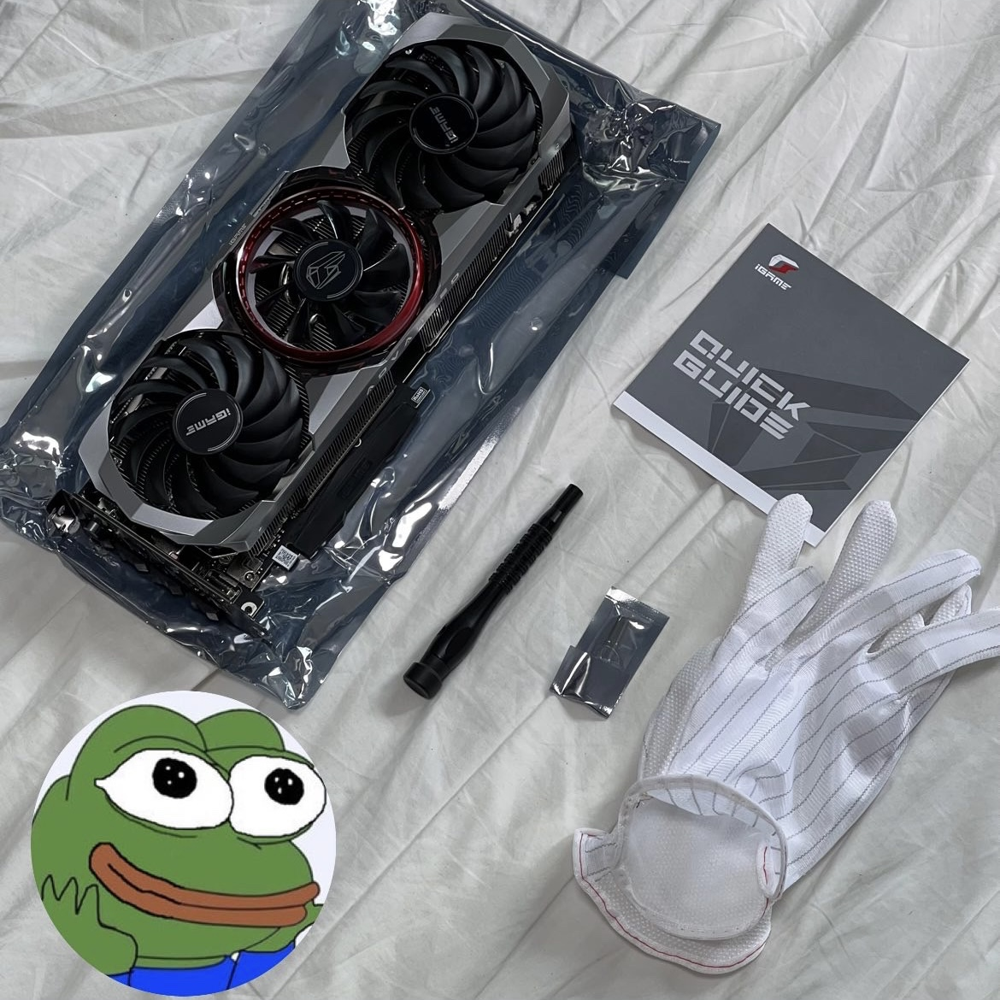

GTX3060
Eric쿤이 큰 마음먹고 최근 구매한 그래픽카드이다. Eric쿤은 해당 그래픽카드를 구매후 로스트아크를 재밌게 즐기고있다고 한다.2020년 9월 1일, 한국 시간으로 9월 2일 오전 1시, 지포스 30 시리즈의 정보가 대거 공개되었다. 우선 레이 트레이싱 성능이 대폭 강화되었으며 삼성의 8N 공정을 사용한다.
적용되는 신규 기술들은 3080, 3090에만 적용되는 마이크론 테크놀로지제의 GDDR6X SGRAM 규격과 신형 쿨링시스템 그리고 마이크로소프트의 새로운 데이터 기술인 DirectStorage등이 적용되어 있다고 홍보 중이다.

2021년 2월 25일에 정식 출시된 메인스트림 그래픽 카드. 1월 12일 CES 2021 발표에서 알려진 사양들의 하향을 역산했을 때 상위 라인인 RTX 3060 Ti보다 30% 정도 떨어지는, 이전 라인업의 RTX 2060 Super와 RTX 2070 사이의 아쉬운 성능을 보일 것이라는 추측이 오갔으며, 함께 발표된 Resizable BAR 기능을 감안하면 튜링 세대와의 격차는 조금 더 벌어질 수 있어도 몇몇 지원 게임들 한정이라 미지원 게임들은 큰 영향이 없거나 오히려 성능이 떨어질 수 있으므로 Resizable BAR만으로 추가 성능 향상을 너무 바라지 않는 것이 좋다는 것이 중론.